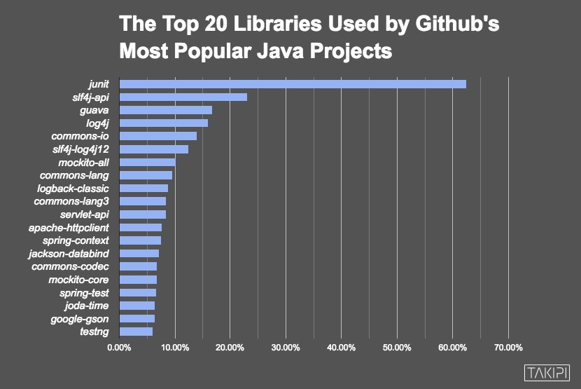

第二部分 使用JUnit编写和执行单元测试
Never in the field of software development was so much owed by so many to so few lines of code.
软件开发史上从未有过如此少量的代码对如此广阔的领域产生了如此巨大的作用。
--Martin Fowler
1997年，Eric Gamma（设计模式“四人帮”之一，Eclipse之父）和Kent Beck（极限编程方法学创始人）在从瑞士苏黎世飞往美国亚特兰大的飞机上偶遇，因为长路漫漫无心睡眠，两个人就进行结对编程，在下飞机之前完成了JUnit这个测试框架的第一个版本。此后，JUnit迅速传播，成为几乎每个Java项目的标配。
JUnit超级流行，是事实上的Java 单元测试和TDD的工具标准。有人在2016年选择了GitHub上最流行的3862个Java项目，找出了最常用的100个组件，可以看到JUnit 以63%的采用率遥遥领先于其他的组件：

知名的项目都有很高的单元测试覆盖率。而JUnit是Java领域单元测试的事实上的标准。另一个可以与JUnit抗衡的测试框架是TestNG，但只有不到10%的采用率。